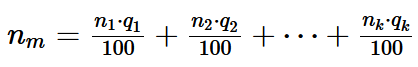
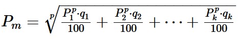
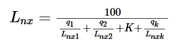

|
|
|


基于载荷谱的额定寿命计算
轴承上的载荷谱具有以下值：
| k: | 载荷谱中的元素数量 |
| qi: | 频率（载荷组 i）（%） |
| ni: | 转速（载荷组 i）（rpm） |
| Fri: | 径向力（载荷组 i）（N） |
| Fai: | 轴向力（载荷组 i）（N） |
您可以从轴计算中获取此载荷谱数据，在这种情况下，径向力和轴向力可能会得到不同的载荷谱。或者，您也可以从数据库中选择载荷谱。对于轴承力，这里的重要因素是扭矩系数（而非载荷系数），并且负号前缀运算符只会影响轴向力。
采用简单计算方法可达到的额定寿命：
您通过定义当量设计载荷和平均转速来计算额定寿命。然后可以使用常用公式计算额定寿命。
|  | (27.4) |
|  | (27.5) |
| nm: | 平均转速 |
| p: | 额定寿命公式中的指数（3.0 或 10/3） |
| Pi: | 当量动载荷（载荷组 i） |
| Pm: | 平均当量动载荷 |
采用修正额定寿命计算可达到的额定寿命：
使用修正额定寿命计算时，会针对每个当量载荷组分别计算额定寿命。然后利用该结果确定总使用寿命：
|  | (27.6) |
| Lnxi: | 在使用转速 ni 和载荷 Fri、Fai 情况下的使用寿命（载荷组 i） |
| Lnx: | 总额定寿命 |
| 下标 x 可以为 h 或 rh |
Rating life calculation with load spectra
The load spectrum on the bearing has these values:
| k: | Number of elements in the load spectrum |
| qi: | Frequency (load bin i) (%) |
| ni: | Speed (load bin i) (rpm) |
| Fri: | Radial force (load bin i) (N) |
| Fai: | Axial force (load bin i) (N) |
You can take this load spectrum data from the shaft calculation, in which case you may obtain different load spectra for radial and axial forces. Alternatively, you can select a load spectrum from the database. For bearing forces, the important factor here is the torque factor (not the load factor) and a negative prefix operator will only affect the axial force.
Achievable rating life with simple calculation approach:
You calculate the rating life by defining an equivalent design load and the average speed. You can then use the usual formulae to calculate the rating life.
| (27.4) | |
| (27.5) |
| nm: | Average speed |
| p: | Exponent in the rating life formula (3.0 or 10/3) |
| Pi: | Dynamic equivalent load (load bin i) |
| Pm: | Average dynamic equivalent load |
Achievable rating life with the modified rating life calculation:
When the modified rating life calculation is used, the rating life is calculated separately for every equivalent load bin. The result is then used to determine the total service life:
| (27.6) |
| Lnxi: | Service life (load spectrum bin i) in the case of speed ni and load Fri, Fai |
| Lnx: | Total rating life |
| Index x can be h or rh |